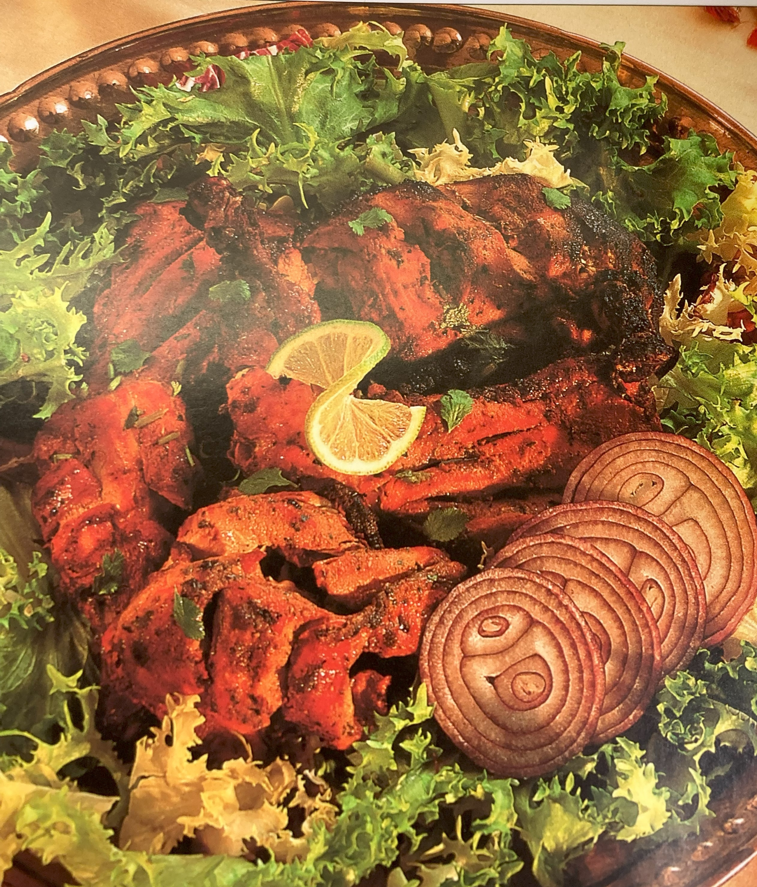

Tandoori Chicken

Ingredients
Switch to Steps
-
3 lb Oven-Ready Chicken
-
8 oz Plain Yogurt, beaten
-
4 Tbsp Tandoori Masala Paste
-
2 Tbsp Vegetable Oil
-
Salt
-
Lemon Slice and Onion Rings to garnish
Steps
Switch to Ingredients
-
Using a small, sharp knife or scissors, remove the skin from the chicken and trim off any excess fat.
-
Using a fork prick the flesh at random.
-
Cut the chicken in half down the center and through the breast.
Cut each piece in half again.
Make a few deep gashes diagonally into the flesh.
-
Mix the yogurt with the masala paste and season with salt.
-
Spread the chicken with the yogurt mixture, spreading some into the gashes.
-
Leave to marinate in a cool place for at least 2 hours, or in the refrigerator overnight.
-
Preheat the oven to 475F.
-
Place the chicken quarters on a wire rack in a deep baking tray.
-
Spread the chicken with any excess marinade,
reserving a little for basting halfway through the cooking time.
-
Melt the vegetable oil and pour over the chicken pieces to seal the surface.
This helps keep the center moist during roasting.
-
Roast the chicken for about 10 minutes, then remove from the oven, leaving the oven on.
-
Baste the chicken with the remaining marinade.
-
Return to the oven and switch off the heat.
-
Leave the chicken in the oven for 15-20 minutes without opening the door.
-
Serve on a bed of lettuce and garnish with the lemon and the onion rings.